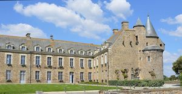
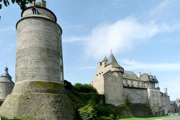
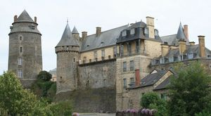
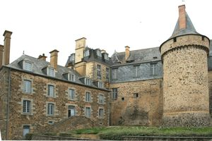

Recensement Jean-Claude Truffet
| Département | 35 — Ille-et-Vilaine |
| Canton | Châteaugiron |
| Commune | Chateaugiron |
| Type d'édifice | Forteresse |
| Période d'origine | XIV-XV |




CHATEAUGIRON, En 1450 Jean de Derval entreprend la restauration du château, à Jean de Laval époux de Françoise de Foix maîtresse du roi François 1er. Le château ne fut pas relevé de sa ruine au XVIIe siècle par la famille de Cossé-Brissac qui vendit la baronnie le 8 mars 1701 aux Le Prestre de Lézonnet. René Le Prestre de Lézonnet effectue d'importants travaux au début du XVIIIe siècle dans sa nouvelle propriété. Il agrandit l'ancien corps de logis ouest en un vaste bâtiment en fond de cour. A la Révolution française, la famille finit pourtant par se séparer du château. Dans un premier temps, le donjon et la tour de l'Horloge sont donnés à la commune ; le reste du château est vendu à un marchand de Rennes, Ramé, en mars 1795. Par le jeu des successions, le château échoit en 1887 aux Renaud, puis en 1913 à Joseph Chudeau, un architecte nantais qui le vend en 1925 au conseiller général Francis Guérault. Donné par ce dernier au Conseil général d'Ille-et-Vilaine en 1926, le château voit disparaître l'année suivante ses écuries, en très mauvais état. En 1929 on projette d'y installer un musée d'art régional. Les façades sont traitées à la française. De grandes fenêtres sont percées, surmontées de lucarnes à frontons en plein cintre alternant avec des frontons triangulaires. A l'angle nord-ouest du château, là où s'élevait une des tours ruinées.
CHATEAUGIRON, malgré ses archaïsmes sur le plan défensif continua à assurer un rôle militaire tout au long du XVe siècle. En 1487, la garnison comptait ainsi une vingtaine de combattants. Son importance stratégique n'est pas démentie non plus au XVIe siècle. La ville et le château furent même le terrain d'affrontements sanglants pendant la guerre de la Ligue, ce qui ne manqua pas d'entraîner de sérieuses destructions. il est difficile de savoir à quoi ressemblait la forteresse à une époque antérieure au XIVe siècle. Les campagnes de reconstruction des XIVe-XVe siècles s'appuyèrent sur un plan plus ancien, sinon sur des constructions antérieures. C'est sans doute à Patri de Châteaugiron que l'on doit les importantes reprises du château à la fin du XIVe siècle. Il est cependant certain que d'autres travaux intervinrent dans le courant du XVe siècle, sur le logis seigneurial et peut-être sur les tours et fortifications y attenant, fut construit un grand pavillon avec galerie en bois prenant assise sur l'ancien mâchicoulis. Le donjon à miraculeusement échappé aux démantèlement ordonnés par Richelieu. Cette galerie promenade fut même continuée jusqu'à la tour du Cardinal. A l'opposé, à l'angle sud-ouest, l'autre tour en ruine fut abattue, laissant place à l'extrémité du nouveau bâtiment en fond de cour. Ce pavillon d'entrée constituait le seul accès au château. Deux ans plus tard, les quatre tours du château et l'abside de la chapelle sont classés au M.H. En 1936, le château dans son ensemble, à l'exception de la chapelle, devient propriété de la commune. L'installation de la mairie dans le château à partir de 1978 permet de sauver d'une ruine certaine les parties non classées du monument redevenu désormais un lieu de pouvoir.
Famille de Jean de Laval et Famille de Cossé-Brissac
"
Forteresse de Chateaugiron gps 48° 02' 56" nord, 1° 30' 07" ouest